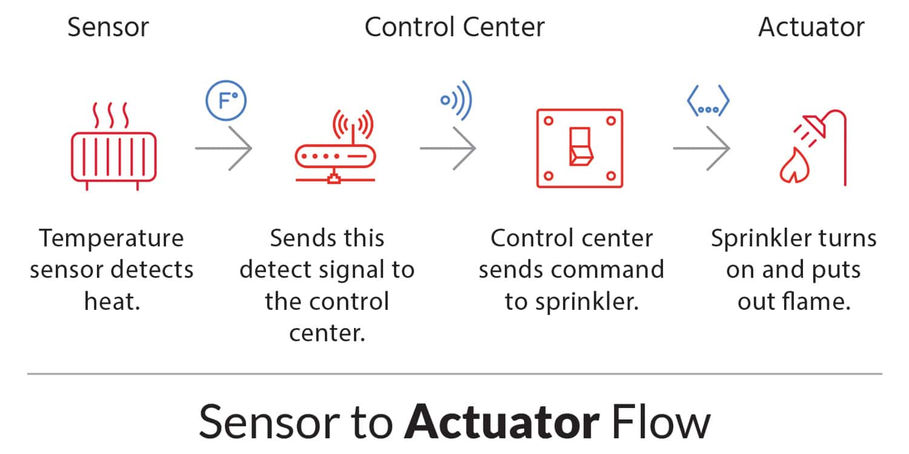

微处理器
Microprocessor
功能 | Function
处理数据，决策并控制执行器
Process data, make decisions, and control actuators
处理流程 | Processing Flow
ADC转换 Analog-to-Digital Conversion
数据分析 Data Analysis
算法执行 Algorithm Execution
6 / 26